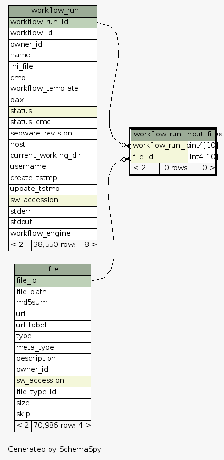
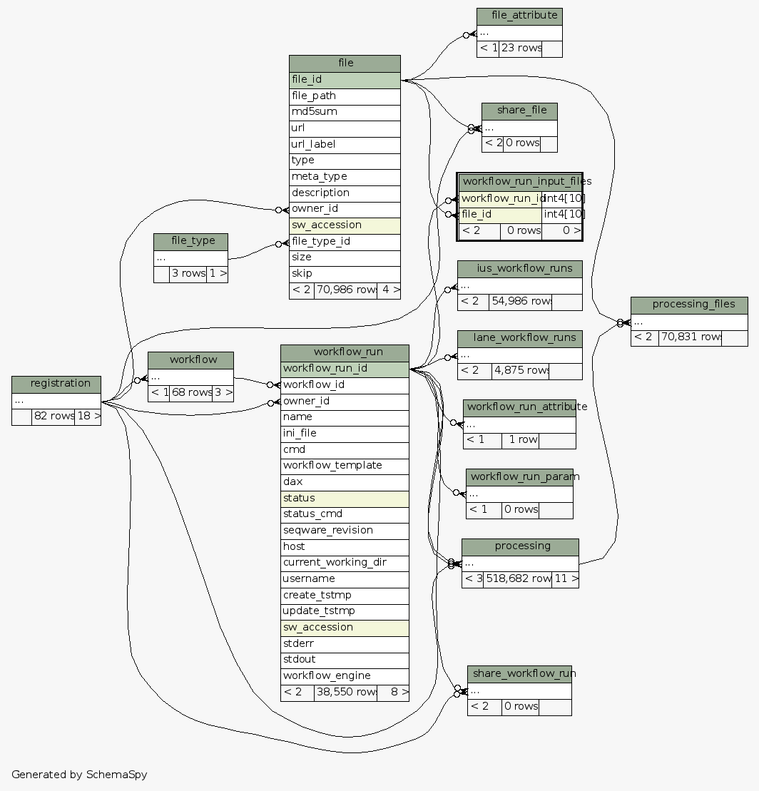

| Table test_seqware_meta_db.public.workflow_run_input_files Tracks which files have been used as input for workflow runs (1.0.X, created by SeqWare)
|
Generated by SchemaSpy |
| |||||||||||||||||||||||||||||||
Table contained 0 rows at Mon Mar 31 13:20 EDT 2014 | |||||||||||||||||||||||||||||||
Indexes:
| Column(s) | Type | Sort | Constraint Name | Anomalies |
|---|---|---|---|---|
| file_id | Performance | Asc | file_id_workflow_run_input_files | |
| workflow_run_id | Performance | Asc | workflow_run_id_workflow_run_input_files | |
| workflow_run_id + file_id | Must be unique | Asc/Asc | workflow_run_input_files_unique | These unique columns are also nullable |
|
  |